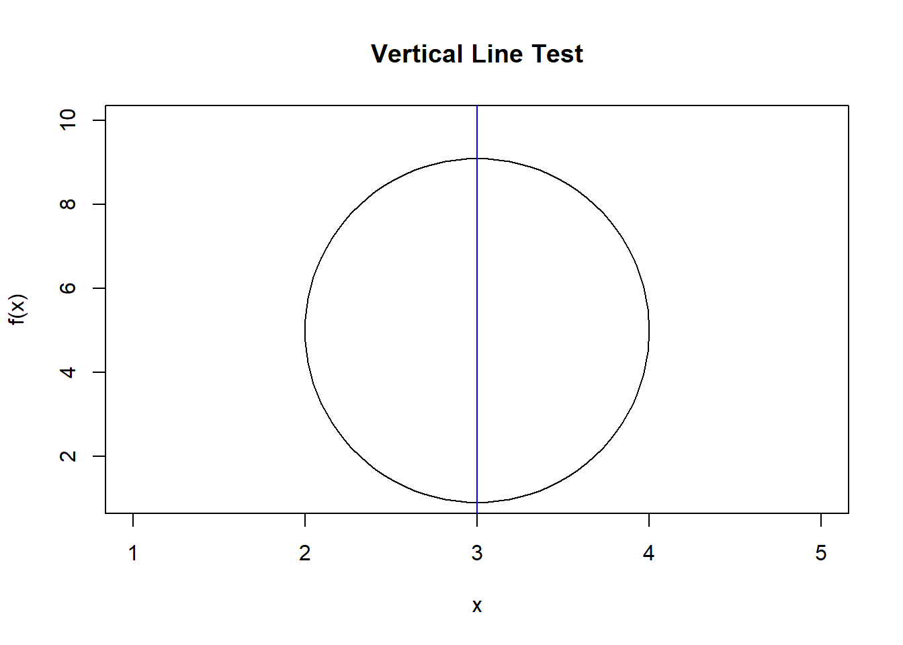
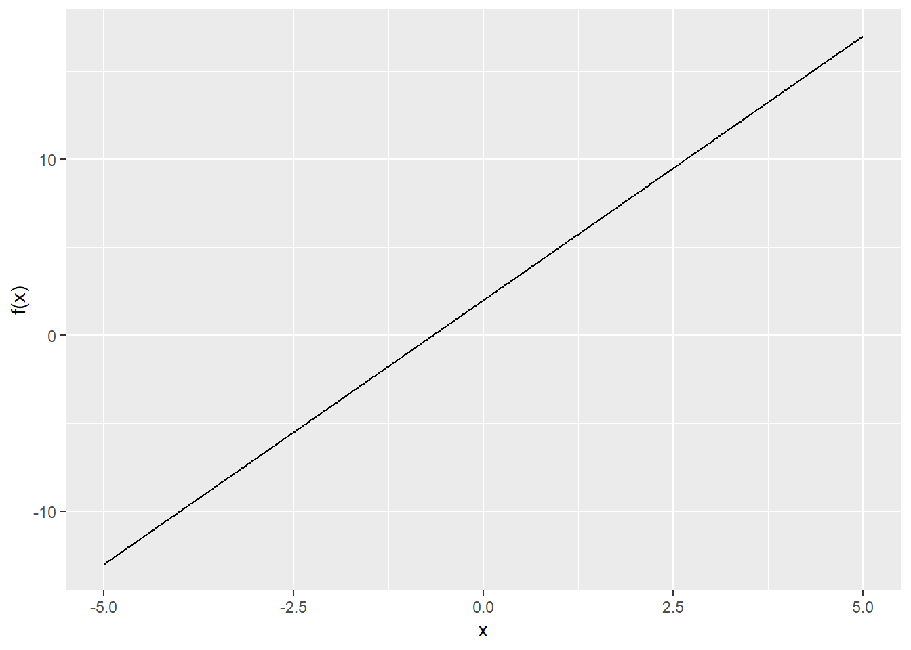
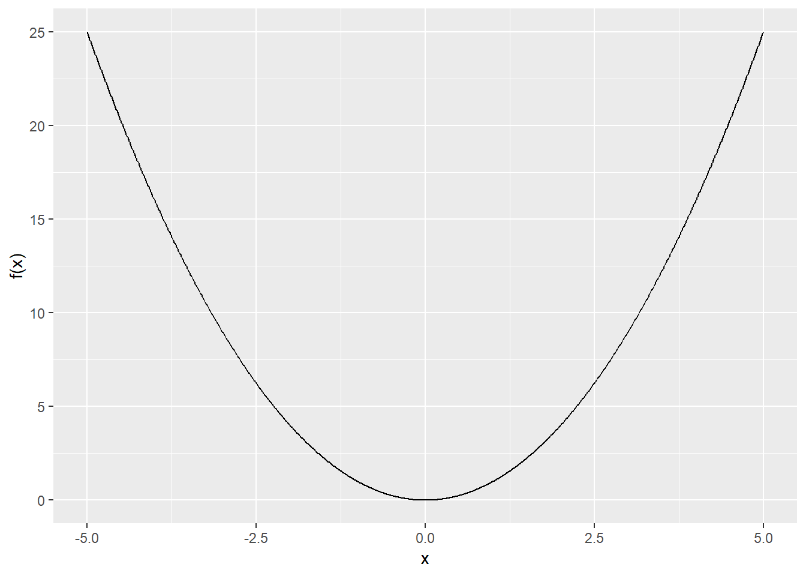
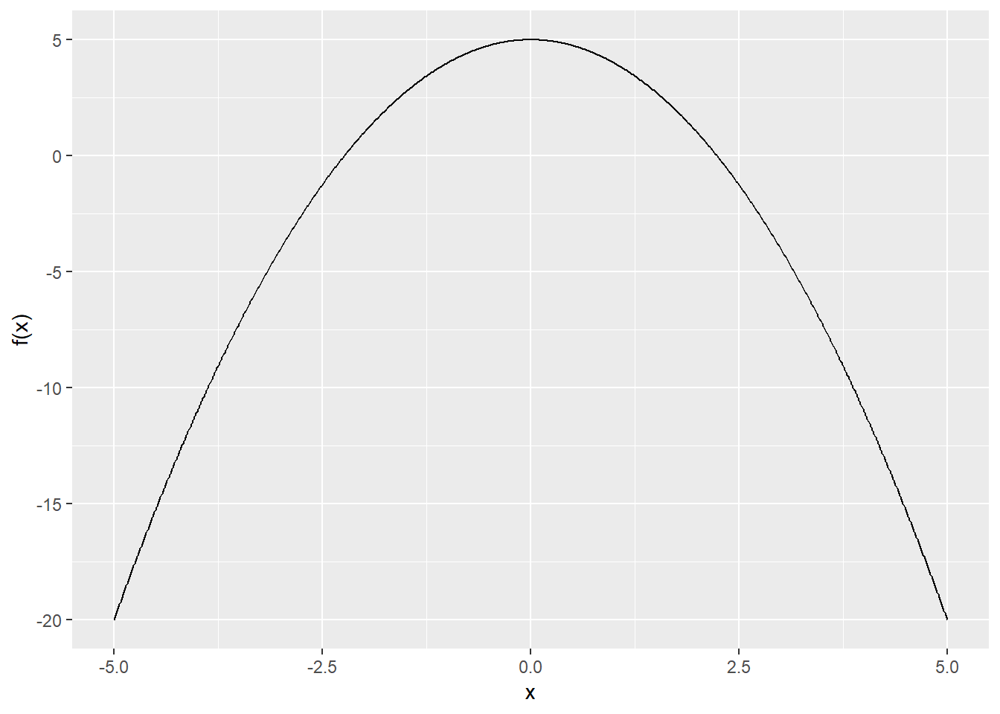
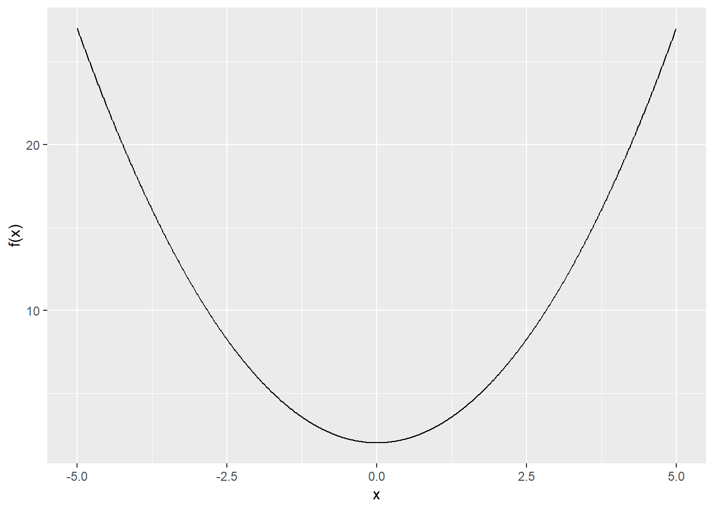
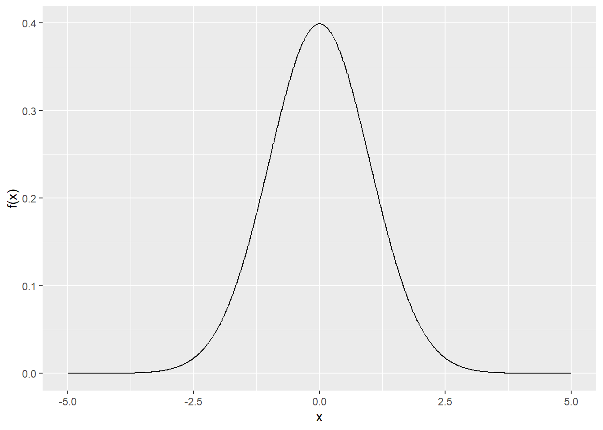
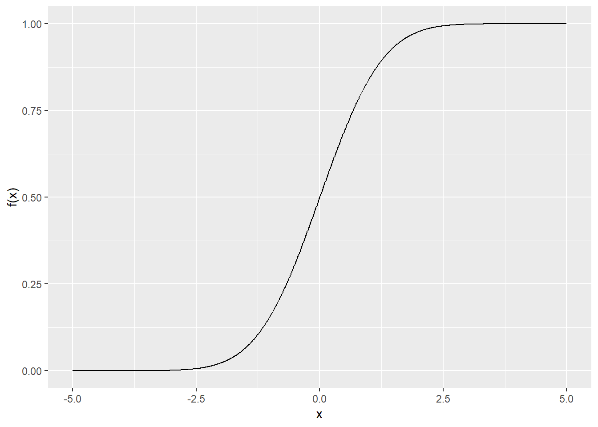

Chapter 1
08 March, 2019
Chapter 1 Introduction
There may come a time in a young person’s life when she begins to question her understanding of the world. Tired of falling back on the simple heuristics that had once seemed good enough, she soon finds herself asking the deeper questions. What is an eigenvalue? How can one intuit back-propagation? Why does it take so long for a generalized linear mixed model long to converge? And what, exactly, does it mean to find convergence at all? It is for such people, desiring that their model results are more than just shadows on a cave wall, that this book is written.
In the 20th century, the field of quantitative modeling was mostly limited to people who pursued advanced degrees in the natural and social sciences. A small percentage of students would go all in and learn the theory underlying econometric modeling or game theory. Most graduate students, research faculty, and workers in industry, however, were satisfied to complete a required sequence in statistics plus maybe - if the program was better than average - basic calculus and an overview matrices. They then went about their careers happily building models that they believed to be explanatory or predictive, and with luck a journal would publish their results following a review by cantankerous peers who got around to reading the mansucript after a few months. As has recently been demonstrated, however, many of these published “scientific” findings have been difficult to replicate or do not do well in making accurate predictions on new data points. While rarely this has been due to outright fraud on behalf of the investigators, a lack of understanding of the first principles underlying the various quantitative models is a big source of the problem. Researchers who know software but don’t understand, say, sampling theory or asymptotics, are often afraid to look beyond the \(p\)-value spit out by their computer. While everybody knows deep down in their hearts that \(p\)-values are problematic, not many researchers seem to be able to explain why they should not be the determining factor in deciding whether a finding is “significant” in the colloquial sense of the word.
The modeling options available to researchers in academia and industry have exploded in number in the 21st century. Statistics has re-oriented itself around the “causal inference” paradigm, eschewing 20th-century generalized linear models in favor of approaches that claim to better isolate associations that are causal in nature. The field of “data science”, which overlaps with statistics but also includes machine learning and artificial intelligence, is highly in demand especially in industry, and there is no shortage of traditional and online learning options claiming to teach these skills to motivated students. The same problem that plagued 20th century research methods, however, has only become more prevalent. Data science education tends to emphasize programming, an essential tool for working with the types of high-dimensional, nonlinear models that are used to tell us if a picture contains a cat or a dog or a hot dog. However, as with 20th century training in statistics, most training skims over the mathematical first principles that allow the models to work. The upshot is that machine learning is full of garbage-in garbage-out models, and companies that hire self-proclaimed data scientists may quickly get frustrated when the eager young millennial employee cannot troubleshoot a poorly performing deep learning model.
There is definitely a role for the types of applied statisticians and data scientists who let the software do the work without much of an understanding of the underlying algorithms. They allow research groups to scale up by providing a workforce capable of implementing previously validated models to a well understood problem. A company that has found a regression or ARIMA model performs well in predicting sales only needs somebody to update the model as new data come in. A principal investigator overseeing a randomized controlled trial may only need a research assistant to run difference in means tests. But as research questions and data become more complex, the number of opportunities for something to go wrong only increases. This not only includes data problems (which themselves are often overlooked by people who jump straight to getting a \(p\)-value) but also models that are inappropriate for the data at hand. Spend a week as a consultant trying to explain to a mid-career psychology professor why their mediation model does not prove anything, or why their mixed effects model is making assumptions about stochastic processes and error independence that are easily disproven, and you will quickly recognize how often results are presented that tell us absolutely nothing about how the world works.
1.1 Why Spend Time on Fundamentals?
There are reasons why first principals are elided or superficially covered in statistics and data science training. Most Ph.D. candidates want to study something about nature or society, and data-drive models are only a tool used to test hypotheses. Spending a lot of time on math takes away from time spent investigating what is really of primary interest (though physics and economics students do not seem to have this problem). The same applies for students of data science, who are expected to learn Python or R programming, methods of cross-validation, random forests, gradient boosted machines, support vector machines, shallow neural networks, and deep learning architectures. This is its own daunting challenge, despite some for-profit online programs claiming to help you master these in one month (!!!). Packages and high-level APIs exist to abstract over the linear algebra and numeric optimization happening behind the scenes, so a quick picture showing a derivative and a vector in 2d space is thought to suffice. The danger, however, is garbage-in, garbage-out. As evidence, try Googling “quantitative investment firms fail.”
There are several reasons to take the time to understand the math behind the models. First, it is far easier to troubleshoot a bad model.
Second, it is easier to get creative when the problem is unique.
Second, you learn a couple things when you get to my age. Like friends don’t lie and the latest flashy mansucript may be completely forgotten in five years. This is especially true in machine learning and AI, where it is not currently possible to derive analytic results explaining important concepts like the sample-to-sample variability or posterior density of predictions generated by most algorithms. The results presented may look impressive for a particular problem, but it is not worth trying out in a project with real world implications until others have demonstrated that the results generalize. Absent a clear motivation based on first principals, it is not worth getting distracted by something that somebody threw up on Arxiv.
1.2 How to Learn
Solving mathematical problems uses a different part of the brain than learning a language, yet communicating mathematical results requires the ability to recognize certain symbols and formulas as words. When we learned arithmetic, we memorized words to accompnay operators. Imagine trying to solve a problem like \(2 + 10 \div 5\) without having words for “plus” and “divided by”. A methodologist who has spent enough time working with formulas soon learns to read semmingly complex mathematical expressions as words. They see an expression like \(\frac{e^{-\lambda}\lambda^x}{x!}\) and read it as “Poisson!” Or they see \(\int xp(x)dx\) and read it as “Expected value!” Or they see \(\frac{1}{\sqrt{2\pi\sigma^2}}e^{\frac{-(x-\mu)^2}{2\sigma^2}}\) and declare, “Normal!” For this reason, each chapter will end with a set of “vocabulary” terms that will sometimes be words, sometimes symbols, and sometimes formulas. It is highly encouraged that you memorize these. As the material builds, the task of learning will be much, much easier if the symbols and formulas can be read as words, even as they are being used to perform logical calculations. This chapter ends simply with the Greek alphabet. Not knowing that \(\Lambda\), for example, is pronounced lambda makes it difficult to follow any logical sequence of operations in which a parameter is written with the Greek letter.
It is hoped that working through this book will be an experience akin to reading Thomas Pynchon’s Gravity’s Rainbow. Sometimes it will be fascinating. Sometimes beguiling. Sometimes amusing. Sometimes terribly boring. But when it is finished you can feel a sense of joy and accomplishment, and you can impress (annoy?) your friends bragging about having finished it. Most people are not willing to put in the effort it takes to truly understand the mathematical underpinnings of data science and other quantitively-oriented models. But you are not content to simply take output from a computer algorithm as Gospel truth. You don’t just want to complete a task, you want to understand it. Take pride in the fact that you are willing to put in the effort to not skip the hard parts. Take pride in the fact that you are decidedly not \(\frac{1}{\sqrt{2\pi\sigma^2}}e^{\frac{-(x-\mu)^2}{2\sigma^2}}\).
1.2.1 2.1 Mappings on the Real Number Line
A function is a mapping of one variable onto another variable. That means, that for every input, you assign a specific output. The most common variables used with functions are ‘x’ and ‘y’. However, any variable could be used to represent your input and output variables. We could just as well use ‘a’ and ‘b’ or even ‘pizza’ and ‘ice cream’ as our variables. For this article, we’ll stick with x and y though. Typically, our input variable, in this case our x, represents our independent variable. That means that its value is not dependent on any other variable. Our output variable, in this case our y, represents the dependent variable, meaning that its value is dependent on another variable (x). There are a few conditions that must be met for something to be considered a function: 1. A function must consist of a relation between variables, meaning there must be an input and an output 2. For every input, there can only be one distinct output, meaning there can only be one y for every x This is illustrated well with a mapping diagram as shown below:
Mapping Diagram
There is also something called the vertical line test, which says that if at any point on the graph of a function, a vertical line goes through two points, it is not a function. This is demonstrated well by the graph below:

It is convenient to write an equation mapping our y values to our x values. You may already be familiar with the y = ax notation, where we represent y as a function of x. We are going to introduce function notation, which will look like: f(x) = ax. This says that your output is a function of x, and it is given by the equation ax.
Another thing we look at with functions is the domain and range. The domain is the set of all possible x values for the function. The range is the set of all possible y values. Often, there will be various domain and range restrictions depending on the type of function, and it’s important to be able to spot these. We’ll be going over that a bit more in this chapter.
When people talk about graphing functions, they are usually talking about graphing on the Cartesian coordinate system, which is the xy-plane. In this case, we plot each point as an (x,y) value on the graph. There are some tricks to graphing functions that we will cover later in this chapter. There are also many other coordinate systems, such as the polar or cylindrical coordinate systems, but we will not be covering those here.
1.2.2 2.2 Linear Functions
A linear function is any function that is graphed as a straight line. There are two main components to a linear function, the slope and the y-intercept. The slope is the rate of change of the graph. This is the amount that the y changes for every x. The y-intercept is where the line crosses the y-axis. The standard form of a linear function is f(x) = mx+ b, where m is the slope and b is the y-intercept. It is possible to plot a linear function with just these two pieces of information. For example, the plot of f(x) = 3x +2 is given below:

It is also just as plausible to plot a linear function using any two points on the graph. Since the entire graph is a straight line, we can plot those two points, and then connect them and extend the line that is formed. Linear functions are one of the most encountered functions in daily life. You may not realize it, but you use them every day. For example, when pumping gas, we have a function for the total amount spent that is given by the price per gallon times the number of gallons purchased. Let’s assume gas is $2.90 per gallon. Given mathematically, this can be represented by:
\[ f(x) = $2.90*(x) \]
Next time you are pumping gas, think about what that function would look like for you.
1.2.3 2.3 Polynomial Functions
The definition of a polynomial is something that consists of many terms. However, that is not very descriptive, so we are going to define polynomials as a function that consists of the sum of different powers of the same variable. This is demonstrated well by the standard form of a quadratic polynomial below: \[ f(x) = Ax^2 + Bx + C, \] where A, B, and C are number coefficients. The standard form can tell us a lot about the polynomial. By looking at whether the ‘A’ coefficient is positive of negative, we can determine whether our polynomial is concave up or concave down (opens up or opens down). We can also determine the degree of our polynomial by looking at the highest power exponent in the formula. These are an important start to graphing a polynomial, but we also need to find the roots, if they exist. These are where the graph crosses the x axis, and it will either be at 1, 2, or 0 points for a quadratic function. There is an example of each below:
1 Root:

2 Roots:

0 Roots:

We can find the roots of a quadratic function by using the quadratic formula, given by:
\[ x = \frac{-B \pm \sqrt{B^2 - 4AC}}{2A}, \]
where A, B, and C are the coefficients from the standard form. The domain of a quadratic function is typically all real numbers, since the graph goes on infinitely in both positive and negative directions. However, the range is limited by a maximum or minimum point on the graph. See if you can figure out the domain and range for the polynomials graphed above. There are many real-life applications for polynomials. One example for a quadratic polynomial is the graph of the height of a ball over time. . The ball is thrown straight up into the air to height h, and it’s height over time (t) is given by the following formula: \[ h(t) = -(x-2)^2+4 \] This model only holds for \[0 \le t \le 4\], since before and after those times, the ball becomes stationary. There are far more polynomials than the quadratic one that we’ve talked about. Any given polynomial can be referred to as P(n), where n is the degree of the polynomial, and can be any value from 0 to infinity. You might have noticed that a linear function is just a 1st degree polynomial! Hopefully, this chapter has given you some basic knowledge on polynomials to get you started.
1.2.4 2.4 Logarithmic and Exponential Functions
1.2.4.1 Logarithmic Functions
A logarithmic function can be given by the base formula of: F(x) = logb(x+h)+k b is the base of the logarithmic function, typically either base 10 or e. loge is written as ln. h is the horizontal shift of the function. If h is positive, the graph shifts h units to the left, and if h is negative the graph shifts h units to the right. K is the vertical shift of the function. If k is positive, the graph shifts k units up, and if k is negative the graph shifts k units down The graph of a basic logarithmic function is given below:
The y-axis is an asymptote of the function, meaning that the graph gets infinitely close to the y-axis, but never actually touches it. This is because log is undefined at x <= 0. Therefore, the domain of log is all real numbers greater than zero. The range of log is all real numbers, since there are no horizontal asymptotes. It is important to note that the domain can change depending on h. To graph a log function, you should start with the basic log function given above, and then shift it according to h and k, or stretch it according to the log base b. Description of log functions, real life examples – Country GDP vs happiness
1.2.4.2 Exponential Functions
An exponential function is the inverse of a logarithmic function. The base formula is given by f(x) = ab^x, where a is the initial amount, and b is the growth or decay factor (depending on its value). If b is greater than 1, then the function depicts exponential growth. If b is less than 1, then the function depicts exponential decay. This is because for a b greater than one, as x gets bigger, f(x) also get exponentially bigger. However, when b is less than 1, as x gets bigger, f(x) gets closer and closer to zero. The value for a determines whether the graph is concave up or concave down. If a is negative, the graph will be concave down, while if a is positive, the graph will be concave up. The following four graphs demonstrate each possible exponential function:
The domain and range depend on the values for a and b of the graph. When a is positive, regardless of b, the domain is all real numbers, but there is a horizontal asymptote at the x-axis, so the range is limited to all real numbers >0. When a is negative, the domain is the same, and there is still an asymptote at the x-axis, but the graph is flipped such that the range is limited to all real number < 0. There are many real-life examples of exponential growth. One example is given by the size of a colony of rabbits. F(t) = 2^t This relationship means that at year 1, there were two rabbits in the colony, and then they experienced exponential growth every year after that. This model may be an over-simplification of the many factors that go into the size of a rabbit colony, for example, predators, having different sized litters, etc., but it does give a very good basic visual of the concept, as shown below:
1.2.5 2.5 Step Functions
Step functions are a type of piecewise function, which we will cover more in the next section. A step function consists of constant output values dependent on the input. For example, the step function given by: The open circles denote a point that is not included in the domain of the function, while a closed circle is included in the domain. In our above step function, the value for f(3) is given by___, since when 3<=x < 4, f(x) = . See if you can figure out the values for f(2) and f(5). The domain and range for a step function is very dependent on that specific function. In this case, the domain is and the range is , but this will vary from function to function.
1.2.6 2.6 Piecewise Linear Functions
A piecewise function consists of a single function that has different relations between x and f(x) depending on what the x value is. We will look at piecewise linear functions, which are a function that has a different linear relation depending on what x values you input. An example of a piecewise linear function is given below:
The applications of piecewise functions are endless. One of the most misunderstood applications is how tax brackets work. A simple tax bracket is given by the piecewise function: F(I) = .20I I<=13000 13000(.20) + (I-13000).25 13000< I <= 50000 13000(.20) + (37000).25 + (I-50000).35 I>50000 This may look a bit complicated, but all it means is that if your income is $13,000 or less, you are taxed at 20%, if your income is greater than $13,000 and less than or equal to $50,000, the first $13,000 is taxed at 20%, while the rest is taxed at 25%, and if you make over $50,000, the first $13,000 is taxed at 20%, the next $37,000 is taxed at 25%, and the rest is taxed at 35%. This is shown by the graph below:
As with the step function, the domain and range of the piece wise function are highly dependent on the function itself, and will need to be evaluated on a case by case basis.
1.2.7 2.7 Trigonametric Functions
Trigonometry deals with the study of triangles and angles. There is a lot to cover with trig, but one of the key points is the unit circle. The unit circle is a circle centered at (0,0) with radius equal to 1. This circle has some very interesting properties. Every point on the circle is a value of the sine and cosine functions, with the x value being cosine and the y being sine. The angle that is made from a point on the circle back to the center is measured in radians (which are just another unit of measuring angles). 2 pi radians take you all the way around the unit circle. Now, where it gets really interesting is how this correlates to the xy-graph of the sine and cosine functions. See the unit circle below, and note the sine and cosine values at each angle:
Now, we compare that to the base plots of sine and cosine:
You might have noticed that the values of the unit circle directly represent the xy-values of the plots, with the angle being the x value, and either sine or cosine being the y (depending on which plot we are looking at). Trig functions are cyclical, meaning they repeat and go on forever. This can be demonstrated by going around the unit circle again and again – the same cycle repeats itself. Another important trig function to consider is the tangent function. This is found by sine/cosine and is given by the plot below:
To graph sine and cosine functions, we start with the base plots above. Then, we look at the equation of the function. Sine and cosine are almost identical, the only difference between them being that cosine is pi/2 radians behind sine. The standard formula for a sine function is: f(x) = a sin (bx + c), and the standard formula for a cosine function is f(x) = a cos (bx + c). In the base plots we saw before, a = 1, b = 1, and c = 0. The domain was the set of all real numbers and the range was -1 <= y <= 1. The amplitude, which is one half the height from the maximum point to the minimum point, was 1. The period, which is the distance of one cycle, was 2pi. In both equations, ‘a’ changes the amplitude by a factor of ‘a’. Then, ‘b’ changes the period by a factor of 2pi/b. Lastly, c causes a horizontal phase shift, which shifts the entire graph to the left or right by ‘c’ units. See the graph of a sine function below, and see if you can figure out the equation for it:
One of the main applications for sine and cosine is when talking about various types of waves. One specific example is sound waves. Sound waves have a specific amplitude and period, depending on pitch, and it is possible to map these waves using sine and cosine functions. Some other trig functions you may encounter are cosecant, secant, and cotangent. Cosecant is simply 1/sine, Secant is 1/cosine, and cotangent is 1/tangent, or cosine/sine. We will leave it at that for now, because the graphs of these functions are a whole other topic.
1.2.8 2.8 Probability Mass Functions
A probability mass function, or PMF is a function that gives the probability for each discrete random variable in a set. A discrete variable means that there is a countable, finite number of variables. For example, when flipping a coin, you can either get heads or tails; each of these is a discrete outcome. A PMF can be modeled, just like any function, through an equation, a table or a graph. The equation for a PMF depends on the specific function being modeled. A PMF equation will typically look like P(X = x). This is the probability that X is equal to x. It is easier to understand this with an example: Say we have a standard deck of playing cards, and we draw a card at random. We want to model the probability that the card will be a given suit, so we construct a PMF with: P(X = hearts) = ¼ P(X = diamonds) = ¼ P(X = spades) = ¼ P(X = clubs) = ¼ The sum of all our probabilities must add to 1, to account for all possible outcomes. We can graph this using a histogram as shown:
1.2.9 2.9 Probability Density Functions
A probability density function, or PDF, is closely related to a probability mass function. However, a PDF is used to model continuous random variables rather than discrete variables. A continuous random variable is a variable where the result can be an infinite number of values. For example, the time to complete a given task can be an infinite number of things. A PDF is much like a PMF, except we now are finding the probability that X lies in any given interval. This is notated as P( a < X < b). An example of a PDF is: fX(x)={e^−x x≥0 0 otherwise The graph of a typical PDF would look like:

1.2.10 2.10 Cumulative Density Functions
A cumulative distribution function, or CDF, is much like a PDF, except while a PDF finds the probability of each range, the CDF finds the probability up to each point. The CDF finds the probability that a given X value will lie in the range of (-infinity, X). The graph of a typical CDF would look like this. It always starts at 0 and goes to 1 on the y axis (or 0 to 100%).
